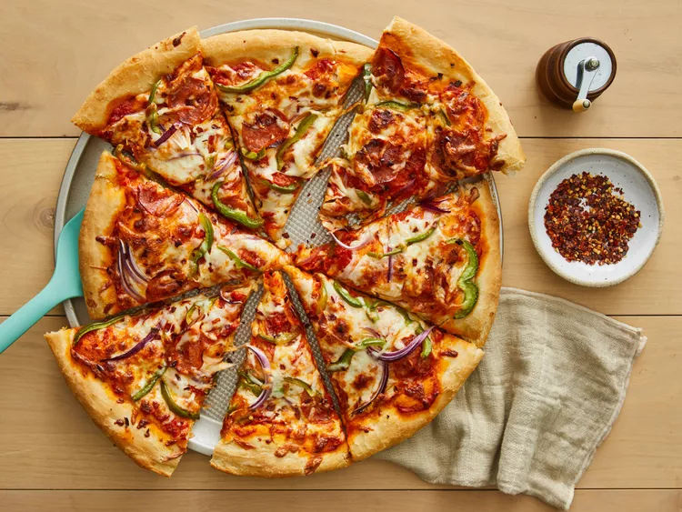

Home
Jay's Signature Pizza Crust

Description
This pizza crust recipe is a classic and versatile base for any pizza creation. It's easy to make and yields a deliciously crispy and chewy crust that pairs perfectly with your favorite toppings.
Whether you're a seasoned pizza maker or a beginner, this recipe will help you create a homemade pizza that rivals your favorite pizzeria.
Ingredients
- 1 ½ cups warm water (110 degrees F/45 degrees C)
- 2 ¼ teaspoons active dry yeast
- 3 ½ cups all-purpose flour, divided
- 2 tablespoons olive oil
- ½ teaspoons brown sugar
- 1 teaspoon salt
Steps
- Stir together warm water, yeast, and brown sugar in a large mixing bowl; let sit for 10 minutes.
- Stir in 2 cups of flour, olive oil, and salt. Gradually add remaining flour until dough is no longer sticky.
- Turn dough out onto a floured surface and knead until smooth and elastic, about 8 minutes.
- Place dough in a greased bowl, cover, and let rise in a warm place until doubled in size, about 1 hour.
- Preheat oven to 475 degrees F (245 degrees C).
- Roll dough out onto a greased pizza pan or baking sheet. Add your favorite toppings.
- Bake in the preheated oven until crust is golden brown and cheese is bubbly, about 12-15 minutes.
- Remove from oven and let cool for a few minutes before slicing and serving.